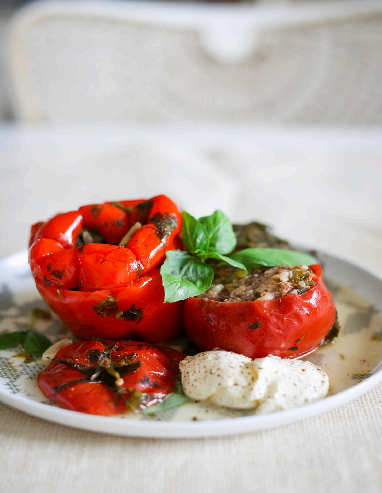

Мы обещали рецепт фаршированных перцев, но не удержались и дали смесь овощей. Что именно фаршировать, решайте сами! У вас теперь большое поле для творчества. Например, вместо помидоров вполне можно нафаршировать «чашечки» из кабачков и цукини. И не забудьте, что более нежные овощи нужно класть наверх, чтобы они не переварились.
Рис можно заменить булгуром или киноа. Перед тем как положить булгур в фарш, его нужно промыть, отваривать не нужно. На этот рецепт взять 3/4 стакана булгура. Киноа быстро готовится и хорошо держит форму. Отваривать перед употреблением также не нужно. Вместо 3/4 стакана риса нужно взять 1 стакан киноа.